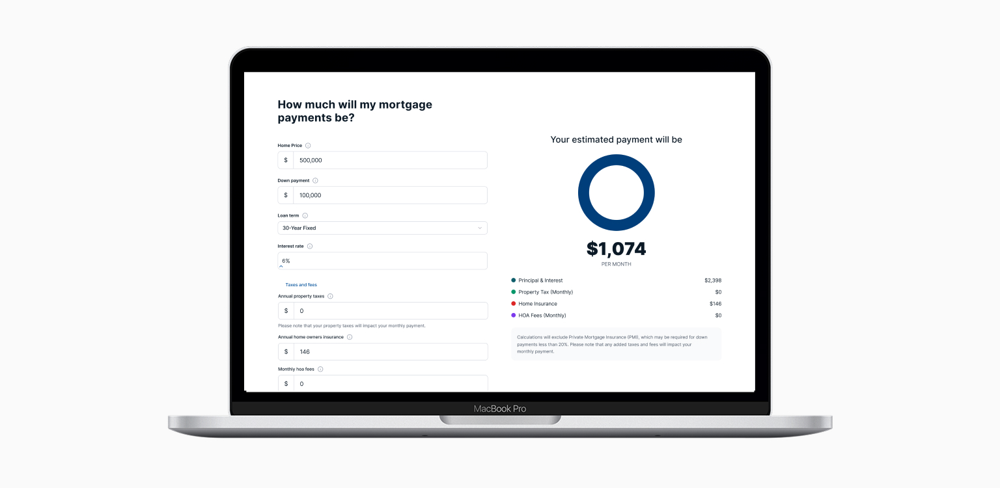
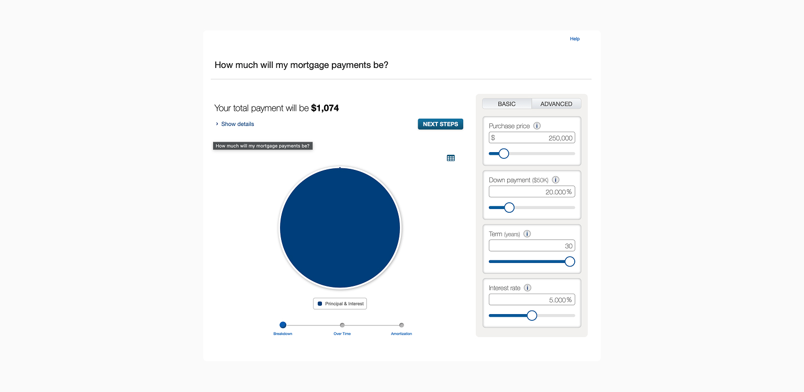
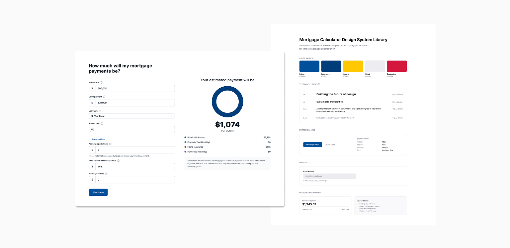
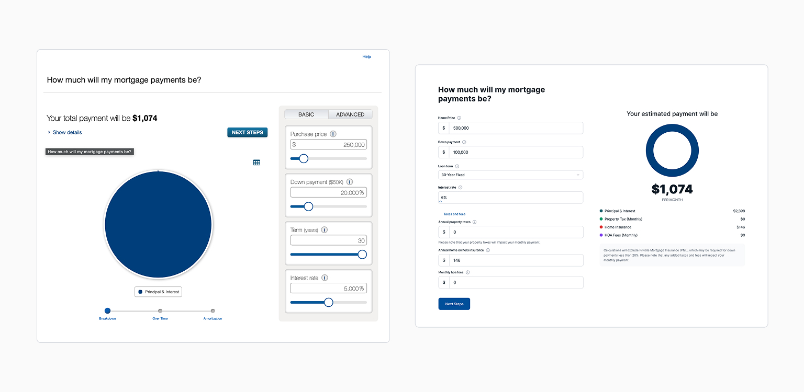

DESIGN SYSTEMS
Mortgage Calculator Design System

Mortgage Calculator Design
IMPACT AND RESULTS
A scalable system improved trust and accelerated delivery.
Delivered a fully branded calculator suite
Transformed LeadFusion's generic out-of-the-box mortgage calculator into a brand-aligned, accessible member experience and established the component library that carried all 15 remaining tools forward.
Reusable patterns eliminated redundant design work
The mortgage calculator pattern became the reusable foundation for the full suite. Subsequent calculators were implemented without starting from scratch, significantly reducing design and development overhead across every future tool.
Vendor relationship became a design asset
Early, consistent collaboration with LeadFusion surfaced configuration options that were not in their documentation. That relationship turned potential blockers into workable solutions and accelerated delivery throughout the project.
Development equipped for long-term independence
Detailed constraint documentation and reusable specs gave the development team everything needed to implement and maintain all 15 calculators without requiring additional design involvement for each one.
Why this mattered
The site had no calculators. Competitors did.
Financial calculators are essential, especially for members weighing mortgages, auto loans, and refinancing decisions. Our website had none. Competitors offered them by default, and the absence was creating real friction at the moments members needed confidence most.
Building custom calculators from scratch would require months of engineering resources that were not available. The solution was LeadFusion, an industry-standard platform already used across financial institutions. But their default output was generic, visually inconsistent, and completely disconnected from our brand.
The challenge was not building calculators. It was making someone else's tool feel like ours, at scale, under time pressure, within a platform designed for generic implementation across hundreds of institutions.
THE FUNCTIONAL GAP
Two problems made this harder than a standard redesign.
No Calculators. No Brand. No Trust.
Our mortgage pages had no functioning calculators at all. Members could not estimate payments or build confidence before applying. When LeadFusion provided a solution, it worked functionally but looked completely disconnected from our brand. Typography, spacing, and interaction states were all misaligned with our design system, undermining the trust the tool was supposed to build.
Working Within Hard Limits
LeadFusion's framework allowed styling but locked down layout logic and interaction patterns. With 15 calculators to transform and limited runway, the mortgage calculator had to establish a pattern strong enough to carry every tool that followed. There was no room to start over for each one.

LeadFusion calculator out of the box with no branding.
VENDOR CONSTRAINTS
Understanding the system came before designing within it.
Mapping the System
Before touching a single component, I met with LeadFusion directly to document what could and could not be modified. I then mapped our full design system, typography, color, spacing, buttons, form patterns, and WCAG requirements, against what the platform permitted. The output was a clear constraint map: which brand standards applied directly, which needed a compromise equivalent, and which could not be touched at all.
Competitive Analysis
Most banks using LeadFusion defaulted entirely to out-of-the-box styling. A smaller number used available customization to create a more cohesive, native-feeling experience. That gap confirmed the opportunity: meaningful brand expression within the vendor's constraints was achievable, it just had not been treated as a priority.
Brand Translation
I applied our typography, color, spacing, and interaction states wherever the platform permitted. Where direct application was not possible, I identified the closest allowed equivalent that maintained brand cohesion. LeadFusion's progressive disclosure patterns were already built into the framework. My job was not to redesign that structure. It was to make sure the experience felt native to the product, not generic.
Documentation as the Scalable Deliverable
Reusable patterns and detailed constraint documentation were not supplementary. They were the mechanism that made the entire system work beyond the mortgage tool. The goal was a handoff that made all 15 calculators implementable without additional design involvement for each one.

Mapping what the platform allowed against what the brand required.
THE FINAL DESIGN
The mortgage calculator became the blueprint.
The redesigned mortgage calculator established a fully branded, WCAG-compliant experience built within LeadFusion's constraints, with our typography, color, form patterns, and interaction states applied consistently throughout. Custom-sized inputs, clear visual hierarchy, and logical information architecture replaced the generic default layout.
The component library and documentation package built alongside it gave development a reusable foundation for all remaining calculators. Each subsequent tool could be implemented consistently without restarting the design process, a direct result of treating the mortgage calculator not as a one-off project but as the foundation of a system.

The same platform. A completely different experience.
REFLECTION
What vendor work taught me.
Constraints drove better focus than freedom would have. Knowing exactly what LeadFusion allowed forced me to identify which brand elements carried the most trust signal and prioritize those. The relationship with the vendor turned out to be as important as the design work itself. Surfacing undocumented configuration options in early collaboration changed the entire delivery timeline. If I did this again I would establish that vendor relationship in week one, not after the first round of constraints became blockers.